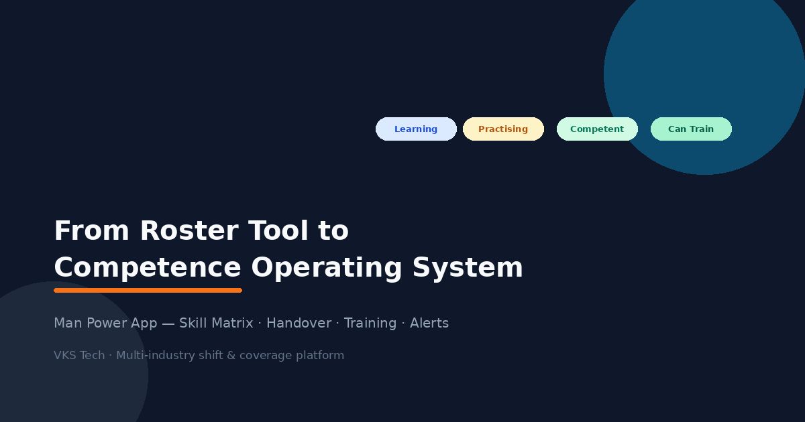
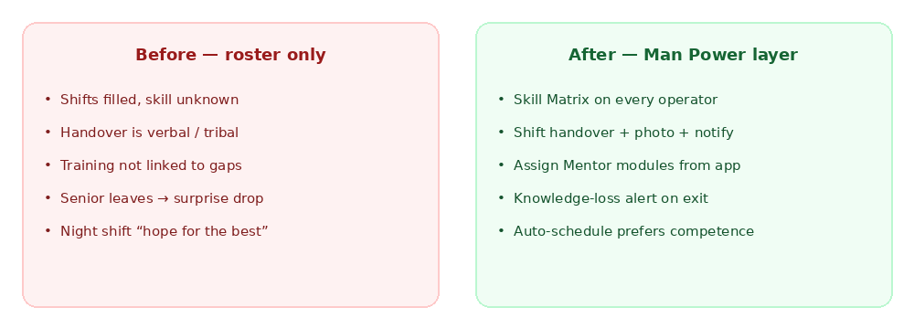
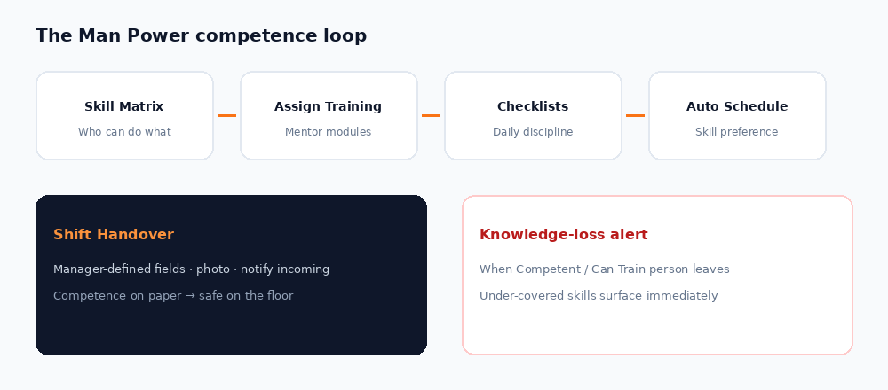
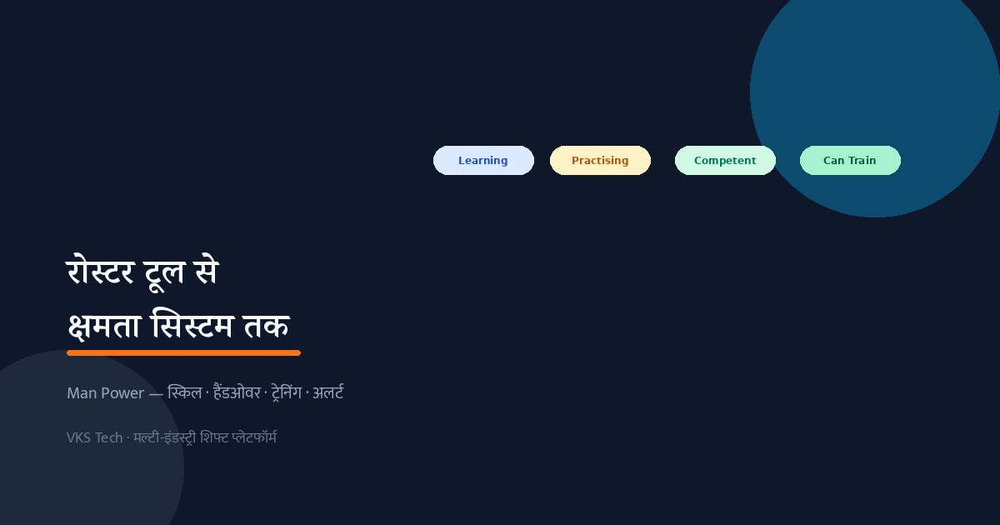
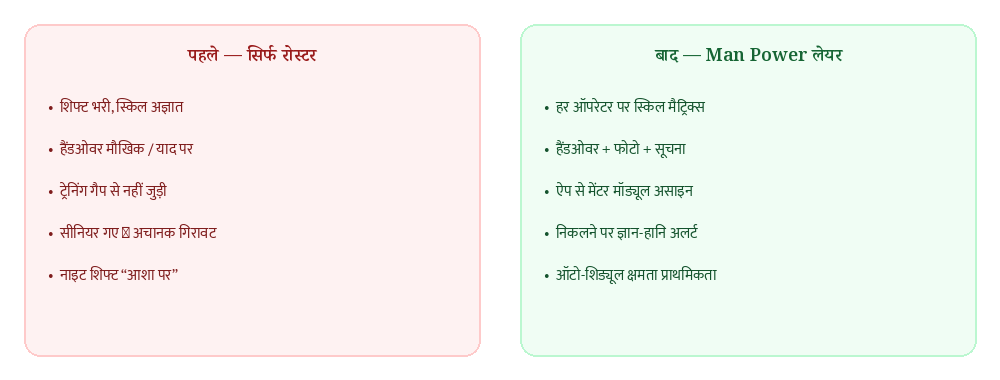
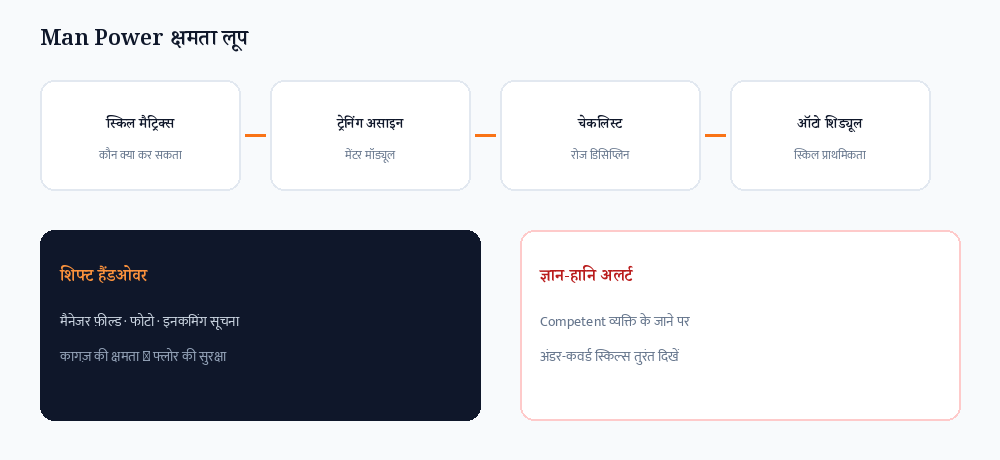

👷 From Roster Tool to Competence Operating System — How Man Power App Closes the Skill Gap
📖 11-min read | Product + Plant Operations | For production managers, HR, and plant heads
Most factories already have a roster. What they do not have is a living answer to three questions that decide output quality:
- Who is actually competent on the critical tasks — not only “present”?
- What happens when that competence walks out on long leave or resignation?
- How does the next shift inherit the floor state without tribal memory?
In an earlier article we argued that metallizer (and wider packaging) skill shortage is a structural cost problem — often 12–20% of potential output lost to slow startups, weak changeovers, and silent knowledge loss. The practical fix was not “hire more people”. It was a stack: structured training, daily process discipline, and tools that make the right behaviour easy.
This follow-up is about the product that now carries that stack on the shop floor: Man Power by VKS Tech.
The roster-only trap
A pure roster answers: who is D / N / Off today?
It does not answer:
- Is the night metallizer shift staffed with someone who can recover a bad boat, or only someone who can “run the recipe”?
- If your best slitter senior resigns on Friday, which skills are now under-covered?
- Did outgoing shift actually hand over machine status — or only say “sab theek hai”?
- Which free training module did you assign to the three people still stuck on “Learning”?
When those answers live only in the manager’s head, every leave cycle and every attrition event becomes a surprise. Output dips show up 3–6 months later, and by then the story is blamed on “market” or “machine age”.

What Man Power adds — without distorting the core app
Design rule we refused to break: shift and coverage must keep working even if no skills are filled. Competence is an optional, low-distortion layer. That matters for multi-industry rollouts — packaging, process plants, maintenance teams, even non-factory teams using Man Power for roster discipline.
1. Skill Matrix (manager-editable, multi-industry)
Operators in rows. Skills in columns. Four statuses: Learning → Practising → Competent → Can Train.
Managers edit the skill list for their industry — metalliser boat discipline, slitter setups, warehouse critical tasks, or IT deployment skills. Coverage % counts Competent / Can Train on skills marked critical. Tap a cell to change status. Data lives with the employee record, not in a forgotten Excel sheet.
2. Skill-aware Auto-Schedule preference
Auto Generate still respects weekly offs, leave, and rotation. Inside each section it now prefers senior staff, then higher skill score (Can Train > Competent > Practising; critical skills weigh more), then name.
If the matrix is empty, everyone scores zero — behaviour matches the old roster engine. If the matrix is filled, stronger people are less likely to be “left over” in awkward patterns.
3. Knowledge-loss alerts
When someone with Competent or Can Train skills is marked left / resigned — or takes long leave (3+ days) — Man Power surfaces which skills become under-covered. The alert is specific: not “person missing”, but “no other Can Train left on vacuum recovery”.
That is the difference between attendance software and competence software.
4. Process checklists + dedicated Shift Handover
Generic process checklists (shift handover, boat change / critical setup, or fully custom templates) give plants a tickable, timestamped record.
On top of that, a dedicated Shift Handover form is built for shift end:
- Manager defines the responsibility fields for that team
- Optional photo
- On submit, incoming operators in the same section on the next shift are auto-notified
This is the “make the good way the easy way” idea, productised.
5. Training assignment bridge to Mentor
From Man Power, managers assign free Mentor modules (Met Train PRO, guidance modules, KPI, Excel Expert, and more) to specific operators. Members open My Training, launch the module, and can mark completion. Skill gaps stop being abstract — they become assigned work.

How a real plant uses it in one week
Monday — map competence
Open Skill Matrix. Mark every operator on 5–8 critical skills. You will immediately see coverage holes you already felt but never quantified.
Tuesday — assign training
For every “Learning” on a critical skill, assign a Mentor free module. Operators see it under My Training on their login.
Wednesday — lock handover fields
Manager edits Shift Handover fields for the department. Night shift submits the form with a photo. Day shift gets the notification before they start.
Thursday — Auto Generate
Run Auto Schedule as usual. Preferential ordering now leans on skill scores inside each section.
Friday — stress test
Mark a skilled operator on 4-day leave (or simulate left). Read the knowledge-loss alert. Decide who must be trained next week before that risk is real.
• Optional layer — plants that only need roster keep the same speed
• Manager-owned definitions — skills and handover fields are not locked to one industry
• Evidence — completions, timestamps, photos, training chips — useful for audits and appraisals
• Ecosystem — Man Power daily ops · Mentor structured learning · PackLink when you must hire outside
Not only metallisers
Because skill lists and handover fields are manager-editable, the same app serves flexible packaging, process and utility teams, warehouse and dispatch critical roles, and any multi-shift team that suffers when “the one person who knows” is off.
The product story is consistent: coverage is not only headcount — coverage is competent headcount.
Key takeaway
Useful links
• Man Power / VKS Tech — shifts, skill matrix, handover, coverage
• Mentor App — free plant modules + 1:1 guidance
• PackLink — packaging professionals network
Related: Blog 91 (operator shortage fix stack) · Blog 92 (shift handover discipline).

👷 रोस्टर टूल से क्षमता ऑपरेटिंग सिस्टम तक — Man Power App स्किल गैप कैसे बंद करता है
📖 12-min read | प्रोडक्ट + प्लांट ऑपरेशन्स | प्रोडक्शन मैनेजर, HR और प्लांट हेड के लिए
ज्यादातर फैक्ट्रियों के पास रोस्टर पहले से है। जो नहीं है, वह तीन सवालों का जीवित जवाब है जो आउटपुट की क्वालिटी तय करते हैं:
- कौन वास्तव में सक्षम है क्रिटिकल कामों पर — सिर्फ “हाजिर” नहीं?
- जब वह क्षमता निकल जाए लंबी छुट्टी या इस्तीफे पर, क्या होता है?
- अगली शिफ्ट फ्लोर की स्थिति कैसे लेती है बिना याददाश्त और अटकल के?
पिछले लेख में हमने कहा था कि मेटलाइज़र (और व्यापक पैकेजिंग) स्किल कमी एक संरचनात्मक लागत समस्या है — अक्सर 12–20% संभावित आउटपुट धीमी स्टार्टअप, कमजोर चेंजओवर और चुपचाप ज्ञान-हानि से चला जाता है। हल “और लोग रख लो” नहीं था। हल था: संरचित ट्रेनिंग, रोज प्रोसेस डिसिप्लिन, और ऐसे टूल जो सही व्यवहार आसान बनाएँ।
यह लेख उसी स्टैक को शॉप फ्लोर पर ले जाने वाले प्रोडक्ट के बारे में है: VKS Tech का Man Power।
सिर्फ-रोस्टर का जाल
सादा रोस्टर सिर्फ यह बताता है: आज कौन D / N / Off है?
यह नहीं बताता:
- नाइट मेटलाइज़र शिफ्ट पर क्या कोई बुरे बोट से रिकवर कर सकता है, या सिर्फ रेसिपी चला सकता है?
- अगर सबसे अच्छा स्लिटर सीनियर शुक्रवार को छोड़ दे, तो कौन-सी स्किल्स अंडर-कवर्ड हो जाएँगी?
- आउटगोइंग शिफ्ट ने मशीन स्टेटस सच में हैंडओवर किया — या सिर्फ “सब ठीक है” कहा?
- “Learning” पर अटके तीन लोगों को कौन-सा फ्री ट्रेनिंग मॉड्यूल दिया गया?
जब ये जवाब सिर्फ मैनेजर के दिमाग में हों, हर छुट्टी और हर अट्रिशन सरप्राइज बन जाती है। आउटपुट 3–6 महीने बाद गिरता है, और तब कहानी “मार्केट” या “मशीन की उम्र” पर डाल दी जाती है।

Man Power क्या जोड़ता है — कोर ऐप बिगाड़े बिना
डिजाइन नियम जो हमने नहीं तोड़ा: शिफ्ट और कवरेज तब भी चलनी चाहिए जब कोई स्किल भरी न हो। क्षमता एक वैकल्पिक, कम-विचलन लेयर है। यह मल्टी-इंडस्ट्री रोलआउट के लिए ज़रूरी है।
1. स्किल मैट्रिक्स (मैनेजर-एडिटेबल, मल्टी-इंडस्ट्री)
पंक्तियों में ऑपरेटर। कॉलम में स्किल्स। चार स्टेटस: Learning → Practising → Competent → Can Train।
मैनेजर अपनी इंडस्ट्री के लिए स्किल लिस्ट खुद तय करते हैं। कवरेज % क्रिटिकल स्किल्स पर Competent / Can Train गिनता है। सेल टैप कर स्टेटस बदलें। डेटा कर्मचारी रिकॉर्ड के साथ रहता है।
2. स्किल-अवेयर ऑटो-शिड्यूल प्राथमिकता
ऑटो जनरेट अब भी वीकली ऑफ, लीव और रोटेशन मानता है। हर सेक्शन के अंदर क्रम: सीनियर → ऊँचा स्किल स्कोर → नाम। मैट्रिक्स खाली हो तो पुराना व्यवहार।
3. ज्ञान-हानि अलर्ट
Competent / Can Train व्यक्ति के लेफ्ट, रिजाइंड या लंबी छुट्टी (3+ दिन) पर Man Power बताता है कौन-सी स्किल्स अंडर-कवर्ड हो गईं — अटेंडेंस नहीं, क्षमता का अलर्ट।
4. प्रोसेस चेकलिस्ट + समर्पित शिफ्ट हैंडओवर
जनरल चेकलिस्ट के साथ समर्पित शिफ्ट हैंडओवर: मैनेजर फ़ील्ड, वैकल्पिक फोटो, सबमिट पर अगली शिफ्ट को ऑटो-सूचना।
5. मेंटर से ट्रेनिंग असाइनमेंट ब्रिज
मैनेजर फ्री मेंटर मॉड्यूल असाइन करें। सदस्य मेरी ट्रेनिंग में खोलें और पूर्ण चिह्नित करें।

एक हफ्ते में कैसे चलाएँ
सोमवार — स्किल मैट्रिक्स भरें (5–8 क्रिटिकल स्किल्स)।
मंगलवार — Learning पर मेंटर मॉड्यूल असाइन करें。
बुधवार — हैंडओवर फ़ील्ड सेट करें; नाइट सबमिट + फोटो; डे को सूचना।
गुरुवार — ऑटो जनरेट (स्किल प्राथमिकता)।
शुक्रवार — ज्ञान-हानि अलर्ट से स्ट्रेस टेस्ट।
• Man Power — रोस्टर + स्किल मैट्रिक्स + हैंडओवर + अलर्ट
• Mentor App — फ्री मॉड्यूल + 1:1 गाइडेंस
• PackLink — अनुभवी पैकेजिंग टैलेंट हायर करना
मुख्य निष्कर्ष
उपयोगी लिंक
• Man Power / VKS Tech
• Mentor App
• PackLink
संबंधित: ब्लॉग 91 · ब्लॉग 92।